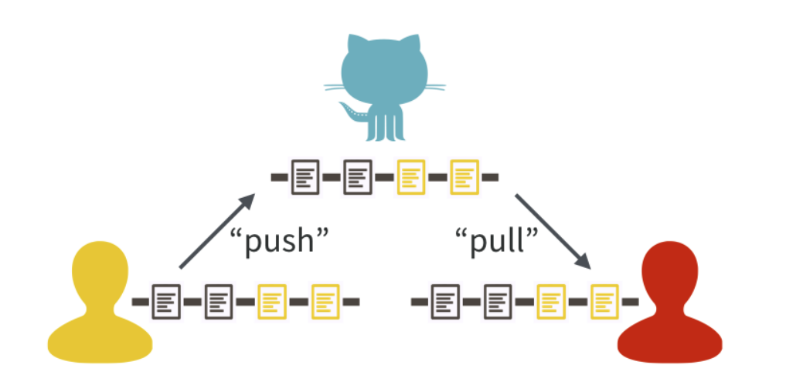
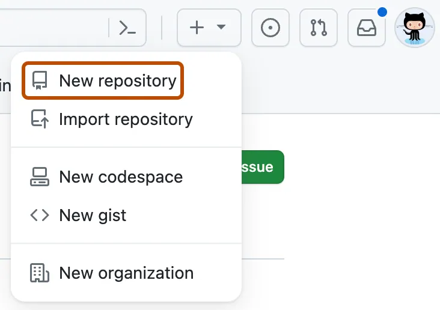
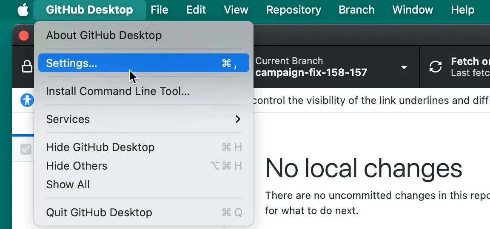
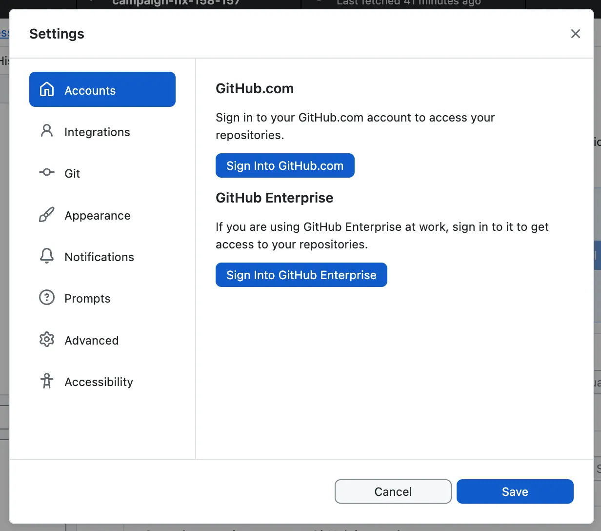
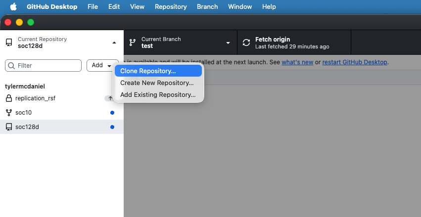
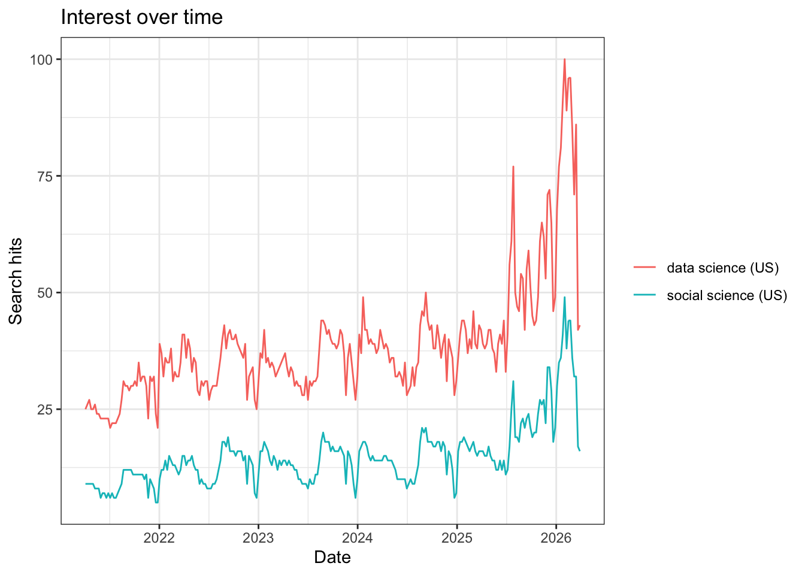
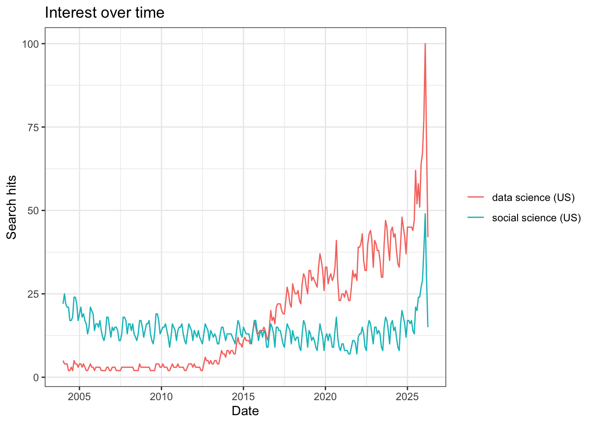
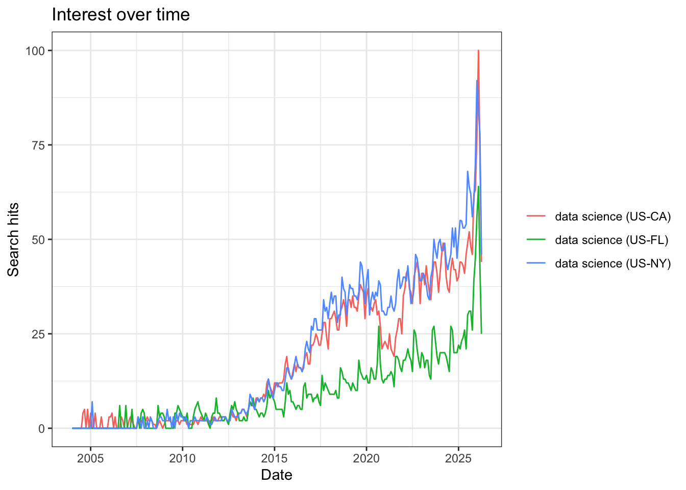

2 Let’s “Git” Going: Code, Collaboration, and Version Controls
This week, we’ll jump into a workflow for computational social science. We will first begin to explore some computational methods for gathering data. Before we dive into analyses, we’ll think about some good practices for doing research. While these might seem cumbersome or clunky initially, they will help us collaborate with others, fix our own mistakes, and save us time and energy down the road.
Monday Readings:
Excuse me, do you have a moment to talk about version control?
Bit By Bit: Social Research in the Digital Age. Observing Behavior.
Optional: How Pew Research Center uses git and GitHub for version control
Wednesday Readings:
Bit By Bit: Social Research in the Digital Age. Creating Mass Collaboration.
Optional: Data Visualization: A Practical Introduction. Preface.
Optional: Data Visualization: A Practical Introduction. 1: Look at Data.
Optional: Data Visualization: A Practical Introduction. 2: Get Started.
Optional: A layman’s introduction to Git
2.3 Version Controls
We’ve all probably seen version controls or version history in our lives before. Tracked Changes in Microsoft Word or edits to Google Drive documents are examples.
Git is a version control system.
GitHub is a way to share your version history online with collaborators.
A central feature to GitHub is it’s features to push and pull changes. Users can modify code (or data) on their own devices and, when ready, push them to a central repository. Collaborators can then pull these changes and see the latest version of the repository as they work on other pieces. If you’re thinking, “this sounds a lot like Google Docs,” you’re absolutely right! That is another type of version control. What sets Git and GitHub apart is their additional features. For example, with GitHub, one can set up multiple branches of a document in order to test different approaches. They can then merge branches together in ways that do not overwrite changes. If you collaborate with others, you will learn the specifics of how these programs work. For now, what’s important is recognizing that version control systems attempt to solve problems related to sharing code and data “up” and “down” project levels between users.

Figure 2.3: Source: Bryan, 2017
You might have seen this logo somewhere:

What is it? An octocat, or something between a cat and an octopus. Allegedly, it represents “octopus merges,” or joins between three or more branches of a project. Anyway, we diverge …
Stanford offers Cardinal Cloud GitHub as a way to (1) access premium features and (2) share work easily within Stanford research teams. A similar option is also available for GitLab. For the purposes of our class, everything can be done using the public GitHub. However, if you are interested in collaborating with others using non-public data, you may want to use one of the aforementioned resources, or a GitHub private repository. If you’d like to use one of these options for the entire class, you are more than welcome to.
2.4 In Class Exercise
Consider the following situation: your team is using the data we developed last week to investigate an outcome of interest. However, time is limited, and you want to maximize efficiency in this collaboration.
Let’s say you want to help a school make their attendance tracking more efficient. The following documents are some examples of attendance notes taken by teachers that are passed on to the principal. Once a month, the principal sends attendance information to the district.
| Teacher | Student | Date | Attendance |
|---|---|---|---|
| Mr. Joe | Tomas | 3/4/2026 | Present |
| Mr. Joe | Malik | 3/5/2026 | Present |
| Mr. Joe | Suzanna | 3/4/2026 | Present |
| Teacher | Student | Date | Attendance |
|---|---|---|---|
| Ms. Angie | Tomas | 3/4/2026 | Present |
| Ms. Angie | Tomas | 3/6/2026 | Absent |
| Substitute | Tomas | 3/6/2026 | ? |
| Teacher | Student | Date | Attendance |
|---|---|---|---|
| Mr. Rich | Christina | 3/5/2026 | Here |
| Mr. Rich | Malik | 3/5/2026 | Not Here |
| Mr. Rich | Suzanna | 3/5/2026 | Here |
Consider the following questions:
What are some possible inefficiencies and/or problems with the current system?
How could existing problems be addressed?
Design a flowchart detailing a better attendance tracking system.
What happens in the following scenarios?
- A teacher catches a mistake in an attendance sheet after the principal has already recorded it.
- The principal needs to request an additional category, vaccination status, to all the teachers.
- A teacher’s assistant has been keeping two versions of attendance (one if the student was there for the entire class, another if the student was there for any of the class), because he isn’t sure about the school’s attendance policy. Now he wants to turn the data in to his teacher/supervisor.
- A principal notices missing attendance days from one teacher, and wants them to add the information and check the prior two weeks.
2.5 Gitting Started
You can access GitHub here. I also recommend downloading GitHub Desktop here. Alternative options include GitKraken - if you try this and like it, you are welcome to use it for the remainder of class!
Once you have opened GitHub, let’s try a simple exercise. You can create your first repository by following the instructions here.

Now, open GitHub Desktop! Some information on getting started with GitHub Desktop is here.


Let’s try to clone the repository to your local machine. You can do this by following the instructions here.

You can then make changes! For instance, you may want to create a new branch (Branch -> New Branch…) of the repository to test out new changes. You can save these changes by committing them. If you want to suggest these changes to another user’s repository, you can add a pull request (Branch -> Create Pull Request).
2.6 Gathering Online Data
In last week’s problem set, we experimented with building our own data (using the data.frame() function) and R’s pre-packaged datasets (using the data() function). Now, we will learn how to gather data using a cannonical example of computational social science data: Google Trends.
In Bit By Bit, Salganik notes ten characteristics of big data:
- Big
- Always-on
- Non-reactive
- Incomplete
- Inaccessible
- Non-representative
- Drifting
- Algorithmically confounded
- Dirty
- Sensitive
As we begin our first foray into online data gathering, keep these characteristics in mind.
Let’s start with pulling data from the Google Trends API. You might have used the Google Trends Interface directly before. Lucky for us, there’s an R package that can pull this information directly into our environment.
Great, now let’s look at a couple trends. We’ll start with the frequency that people are searching for “data science” and “social science.”
Notice that this returns a list of multiple dataframes and terms. We can explore these by typing data_social$. Also note the different parameters that we can set. When we specify c(), this is a simple way to define a one-dimensional vector of numerical or text entries. There are other options that we didn’t specify here, which are evaluated at their default levels. For example, the default time period for these trends is “today+5-y”, which means the last 5 years (you can see this by running ?gtrendsR).
The package comes with a built-in capability for plotting time trends. We can look at these trends with the following code:

What do you notice about the popularity of these terms over time?
We might want to search over a longer time period. How would we do so? With any function, the ? command is helpful for learning the settings that we can modify. When we run ?gtrends, we see that there is a time setting. To change this, we could modify the code below to include time = "all":
When we plot this, we see a vastly different picture:

Next, we might want to use Google Trends to evaluate searches for ideas across space For example, we can examine searches for “data science” in different states.
Notice that we can specify states within the U.S. We can also specify Metropolitan Statistical Areas (MSAs) if we want to. When we plot these time trends, the different states appear in different colors.

In all three states (California, Florida, and New York), searches for data science increase after 2015, but the rates differ substantially. We see that Florida searches for “data science” remain at a lower level than the other two states, and that around 2021-2022, “data science” searches from California dropped, before picking up again. Any ideas for why these differences exist? On your own, I encourage you to play around a bit more with the other parameters in the gtrends() function and see if you can find any interesting phenomena.
Note: You may experience an error if you run to many queries (or search for too large of a dataset) using googletrends or other APIs. If this happens, you usually need to just wait a while (ranging from a minute to a day) and try again.
Additional note: There are two ways to complete problem set 2:
(Preferred) Install GitHub Desktop, and after you complete question 1, clone your repo to a folder in your local machine (we will go over this in class). Then complete the problem set using your local R Markdown document (in the folder you created) with R Studio, and committing changes with GitHub Desktop.
(If you encounter errors with GitHub Desktop, this method may be simpler) After you complete question 1, download the file “Week2PSetTemplate.Rmd” from GitHub Online onto your local machine. Complete each question using RStudio. After each question, when you need to commit the file, manually copy your changes to the .Rmd file and paste them to the same document on GitHub Online (we will also cover this in class).
2.7 Problem Set 2
Note: for Problem Set 2, you will turn in three items: your .Rmd file, your .pdf file, and a link to your github file.
On GitHub, create a new repository called “soc10problemsets” (or something similar). Then upload the “Week2PSetTemplate.Rmd” file (you can download it here here). Make Tyler (
tylermcdaniel) and Yao (yao-mxu) “collaborators” in this repository so we can see your work (Settings -> Collaborators -> Add People). Add your name and the date to the top of the file, save your changes, and commit them. (note: You can do this online, but I recommend using GitHub Desktop!).In the space below, try running the first code chunk, and fix the error. On your local file, commit the file to your GitHub.
Add your own data to a collaboration! In the markdown file, add to the small dataframe with some potential data sources for further social science research. Add one or more resources to this list. Commit your changes.
Using the
gtrendsRR package, download data on a term of your choosing. Show a plot of the search term over time, and then plot it over different geographies. Discuss how each of Salganik’s 10 characteristics of computational data apply (or don’t apply). Commit your changes.List the three types of collaboration that Salganik names. When can each work well, and what are potential downsides? List one new idea for a collaborative data project in each category. Commit your changes.